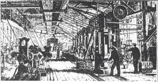

Con il passare del tempo, le macchine per la produzione industriale diventarono sempre più numerose e sempre più grandi: molte di esse non potevano più trovare posto nelle case dei lavoratori. Perciò furono costruite delle fabbriche, cioè stabilimenti capaci di contenere grandi macchinari e migliaia di operai. Il lavoro a domicilio non scomparve del tutto, ma fu gradualmente soppiantato da quello di fabbrica, che era più rapido e più a buon mercato. Le prime fabbriche sfruttavano l'energia idraulica e dovevano perciò sorgere presso fiumi o torrenti. Solo quando si diffuse l'impiego del vapore la vicinanza di corsi d'acqua non fu più indispensabile e si poté produrre energia dappertutto e in tutte le stagioni. Tuttavia, gli imprenditori preferivano impiantare le fabbriche nei pressi dei giacimenti di carbone (il principale combustibile dell'epoca, necessario per azionare le macchine a vapore), che erano numerosi in Inghilterra. il settore tessile, siderurgico e delle miniere divennero fondamentali. Le fabbriche tessili, alimentate da macchine tessili, furono tra le prime a sperimentare la produzione in serie.L'industrializzazione ha portato a uno spostamento della popolazione dalle aree rurali alle città, creando centri industriali urbani. sono state costruite nuove città per ospitare le fabbriche e i lavoratori. Ma le condizioni in queste città non erano buone. Gli operai vivevano in case affollate e malsane, e il lavoro nelle fabbriche era duro e faticoso. Dall'inizio del XX secolo fino ad oggi, le fabbriche hanno continuato a crescere e a evolversi. Le tecnologie si sono sviluppate, rendendo i processi di produzione sempre più efficienti e automatizzati. Ciò ha portato a una maggiore produzione di beni di consumo e all'espansione di settori come l'automobilistico, l'elettronica, l'abbigliamento e molti altri.